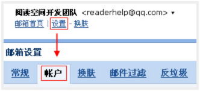
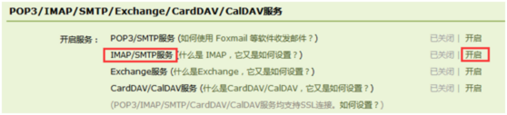
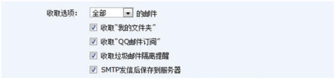
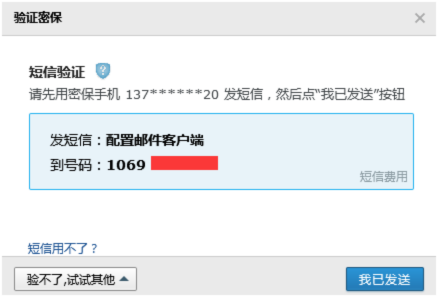
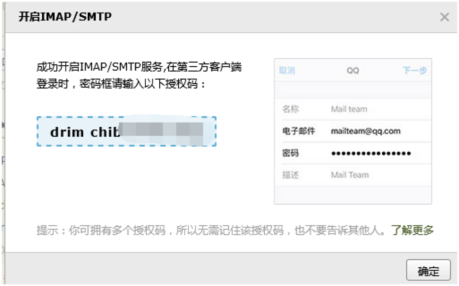
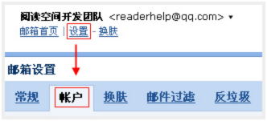
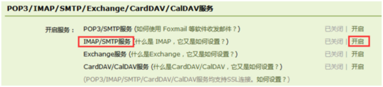
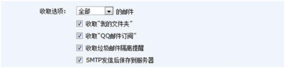
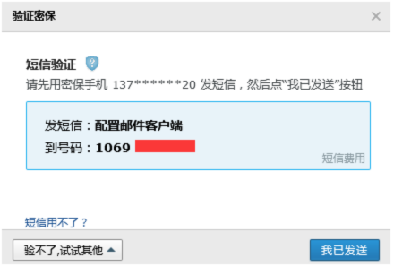
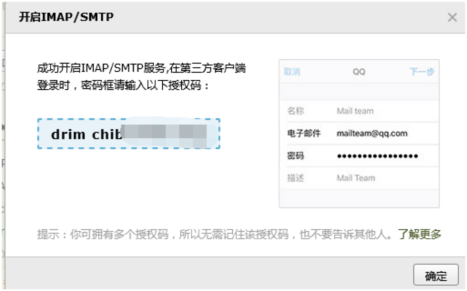

第一步
登录邮箱，进入设置-帐户；
然后，在“帐户”设置中，找到设置项，进行设置，如图
 第二步
点击红框中的开启，会要求验证密保，如下：
第三步
按照提示用绑定手机号，发送短信到指定的号码，完成后点击“我已发送”，会看到成功提示：
第四步，Finish.
记住授权码，将授权码填入Reolink APP的邮箱页面的发件人密码框中。
为了保障用户邮箱的安全，QQ邮箱设置了POP3/SMTP/IMAP的开关。系统缺省设置是“关闭”，在用户需要这些功能时请“开启”。
登录邮箱，进入设置-帐户；
然后，在“帐户”设置中，找到设置项，进行设置，如图
 点击红框中的开启，会要求验证密保，如下：
按照提示用绑定手机号，发送短信到指定的号码，完成后点击“我已发送”，会看到成功提示：
记住授权码，将授权码填入Reolink APP的邮箱页面的发件人密码框中。